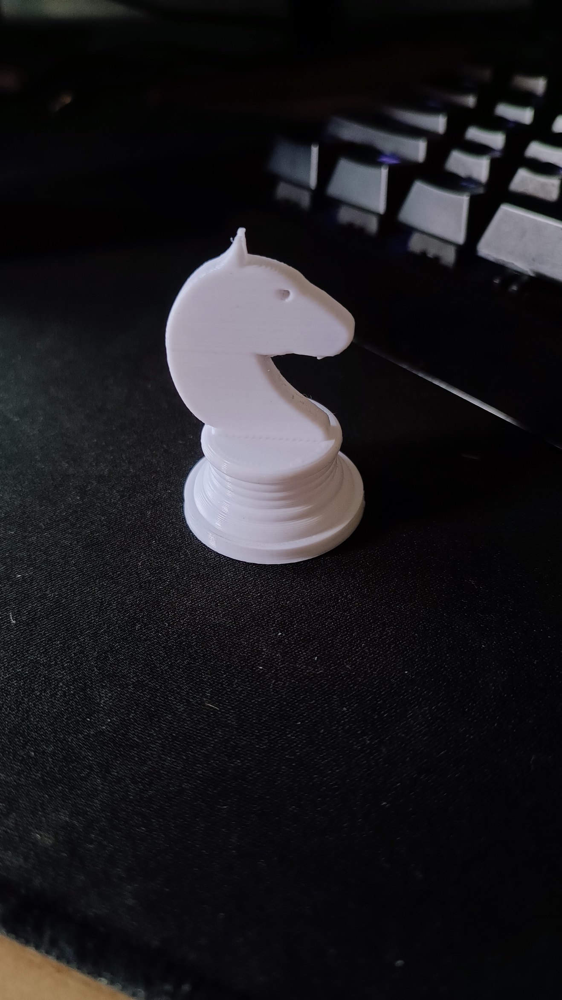

Projects
This page is the documentation of the things I learn throughout the course!
The sixth and last excersice, is to create a knight chess piece. I first inserted a canvas of a kight chess piece, which i used to trace it. for the base i used the revlove funtion and the extrude for the knight .
there is also an attempt from me to create a rook piece.
After creating the chess piece in fuision, we needed to 3D print it. To do this, I save the fusion chess piece file as STL and import it into CURA for slicing. For Faster print time, the layer height is set to 0.2mm, which will take a total of 1hr and 12 mins to print.

This is the 3D printed chess piece after removing the supports
